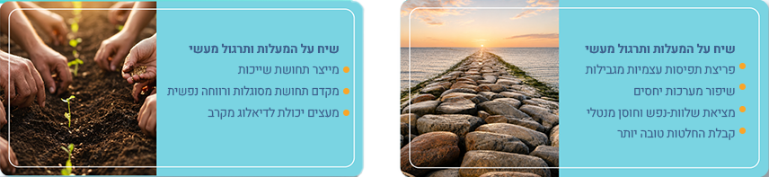
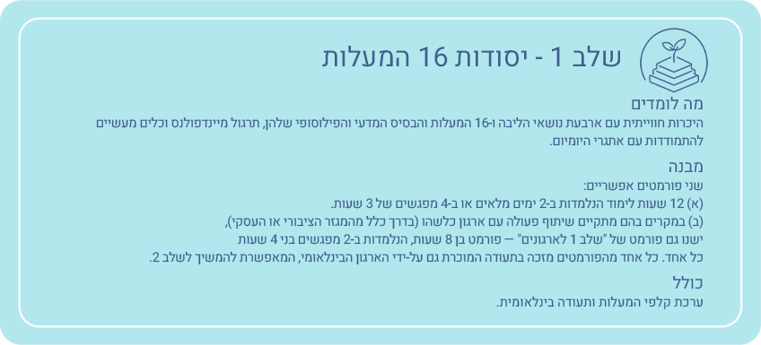
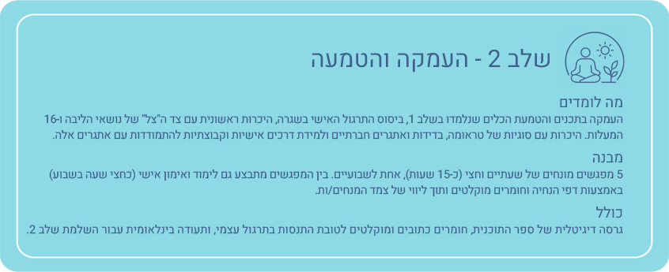
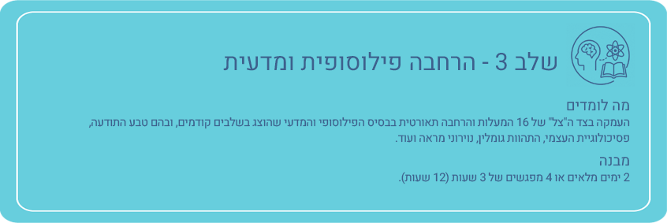
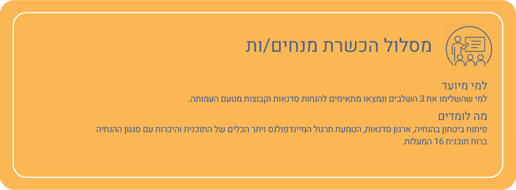

16 המעלות היא תוכנית בינלאומית לפיתוח חוסן רגשי-חברתי ולטיפוח ערכים אוניברסליים וחיים בעלי משמעות
תוכנית 16 המעלות נותנת כלים פשוטים ומעשיים לשיפור חיי היומיום שלנו ומבוססת על ארבעה נושאי ליבה:
כל אחד מארבעת נושאי הליבה כולל 4 ערכים אוניברסליים (מעלות)
העבירו את העכבר על כל מעלה כדי לגלות את משמעותה
באמצעות שילוב בין פילוסופיות מזרחיות ומדע מערבי, בין חכמה עתיקה להתפתחויות מודרניות, התוכנית מייצרת שפה משותפת וסוללת דרך לחיים שלווים, משמעותיים ומאושרים יותר ליחידים, משפחות, קהילות ולחברה כולה.
התוכנית מבוססת על טקסט שכתב מלך מהמאה ה-7, שרצה להשכין שלום בממלכה ולייצר קוד אתי שהאזרחים והאזרחיות יוכלו לחיות על-פיו.
בשנת 2005 הוקם הארגון הבינלאומי לפיתוח חמלה וחוכמה (FDCW - Foundation for Developing Compassion and Wisdom) אשר תרגם והתאים את הטקסט העתיק לעולם של ימינו ופיתח את תוכנית 16 המעלות כפי שהיא פועלת כיום.
התוכנית נגישה בכל העולם עם מנחים.ות מוסמכים.ות ב-22 מדינות.
באמצעות חקירת 16 המעלות מתאפשרת הכרות מעמיקה יותר עם עצמנו ועם אחרים.ות.

הטמעת המעלות מקדמת חיים חברתיים וקהילתיים משותפים גם בזמנים מורכבים. השיח והתרגול מתקיימים בקבוצות, בזוגות ובאופן אישי.
לכולם! ליחידים, לקבוצות ולארגונים המעוניינים לחיות חיים שלווים, קשובים, משמעותיים ומאושרים יותר ולקדם חברה סבלנית, חומלת וסולידרית יותר.
עמותת בית חולמים הביאה את התוכנית לישראל בשנת 2020, והיא הנציגה של הארגון הבינלאומי FDCW בישראל.
התוכנית מוכרת על ידי משרד החינוך ונכנסה למערכת החינוך בשנת תשפ"ג (בתוכנית גפ"ן), ומאז השתתפו בה מאות תלמידים, מורים והורים.
16 המעלות היא תוכנית הדגל במנהל חינוך של עיריית ת"א-יפו, ופועלת גם במרכז הממשלתי לבריאות הנפש בבאר-שבע, במרכז הממשלתי לבריאות הנפש לב השרון, בחברות במגזר העסקי ועוד.
הלמידה מובנית במודל מודולרי הדרגתי. השלמת כל שלב מקנה תעודה בינלאומית מטעם בית חולמים וארגון FDCW הבינלאומי. התוכנית בנויה מ-3 שלבים ולאחריה יכולים/ות המתאימים/ות להמשיך להכשרת מנחים/ות.




מנחי ומנחות תוכנית 16 המעלות בישראל עברו הכשרה והוסמכו על ידי עמותת בית חולמים. המנחים והמנחות ממשיכים ללמוד יחד במסגרת הקהילה המקומית והבינלאומית.
רוצים לשמוע עוד על תוכנית 16 המעלות?
השאירו פרטים ונחזור אליכם עם כל המידע על הסדנה הקרובה ועל התאמת
התוכנית לארגון או לקהילה שלכם.